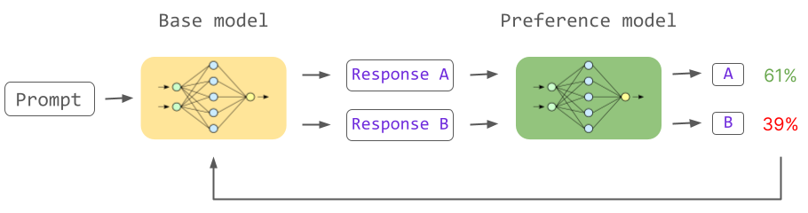

Advanced Method: Reinforcement Learning from Human Feedback (RLHF)
- RLHF is an innovative approach to align LLMs more closely with human preferences.
- It trains a language model through interactions involving human feedback.
- This helps the model generate responses that are more accurate, helpful, and contextually appropriate.
- It involves training a "reward model" based on human rankings of model outputs.
- Direct Preference Optimization (DPO) is a more recent, simpler alternative that bypasses the complexity of RLHF.
